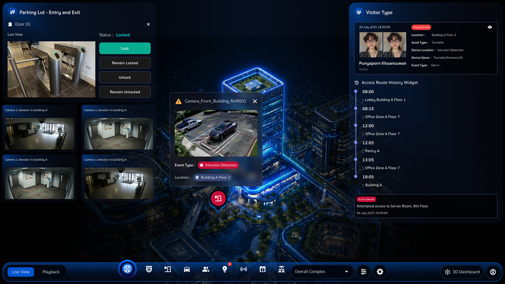

3D Security Monitoring Dashboard
ออกแบบ UX/UI สำหรับ Dashboard ในระบบ Smart Building เพื่อใช้ monitor ข้อมูลของอาคาร เช่น กล้องวงจรปิด, การเข้าออก, และที่จอดรถ แบบ real-time โดยพัฒนาต่อยอดจากระบบ back office ด้านความปลอดภัยที่มีอยู่ เพื่อยกระดับการแสดงผลข้อมูลจากรูปแบบเดิมให้ง่ายต่อการสแกนผ่านมุมมองเชิงพื้นที่ (3D)

Research
ผู้ใช้งานต้อง monitor หลายระบบพร้อมกัน เช่น CCTV, Access Control และ Parking ข้อมูลส่วนใหญ่ถูกแสดงในรูปแบบ table / list ทำให้ต้องใช้เวลาในการตีความ การเชื่อมโยงข้อมูลกับตำแหน่งจริงของอาคารต้องอาศัยประสบการณ์ของผู้ใช้งาน การสลับหน้าจอหลายระบบทำให้ workflow ไม่ต่อเนื่อง
Key Insight
ผู้ใช้งานไม่ได้ต้องการแค่ข้อมูล แต่ต้องการเข้าใจสถานการณ์โดยรวมอย่างรวดเร็ว การแสดงผลแบบ 2D ไม่สามารถสื่อความสัมพันธ์ของข้อมูลกับสถานที่ได้ดีพอ หากข้อมูลถูกผูกกับพื้นที่จะช่วยลดความซับซ้อนในการติดตาม
Problem
- ข้อมูลอยู่ในรูปแบบ table / list ทำให้เข้าใจภาพรวมยาก
- ผู้ใช้งานต้องเชื่อมโยงข้อมูลกับ location เอง
- ไม่เหมาะกับการ monitor หลายระบบพร้อมกัน
- Dashboard แบบเดิมไม่สามารถสะท้อนสถานะของพื้นที่แบบ real-time ได้อย่างชัดเจน
Solution
- ออกแบบเป็น 3D Monitoring Dashboard ที่ใช้ตัวอาคารเป็นตัวแทนของข้อมูล
- แสดงภาพรวมของทั้งพื้นที่ในมุมมองเดียว
- ให้ผู้ใช้เลือกอาคารเพื่อดูข้อมูลแบบเจาะลึก
- รวมข้อมูลจากหลายระบบไว้ใน interface เดียว
Key Features
- ออกแบบเป็น 3D Monitoring Dashboard ที่ใช้ตัวอาคารเป็นตัวแทนของข้อมูล
- แสดงภาพรวมของทั้งพื้นที่ในมุมมองเดียว
- ให้ผู้ใช้เลือกอาคารเพื่อดูข้อมูลแบบเจาะลึก
- รวมข้อมูลจากหลายระบบไว้ใน interface เดียว
Result
- ช่วยให้ผู้ใช้งานเข้าใจสถานะของระบบได้รวดเร็วขึ้น
- ทำให้การ monitor ระบบความปลอดภัยมีประสิทธิภาพมากขึ้น
- เพิ่มประสบการณ์การใช้งานจากระบบเดิมที่เป็น back office
- ยกระดับประสบการณ์ของระบบให้มีความทันสมัยและเข้าใจง่ายมากขึ้น

Reflection
โปรเจกต์นี้สะท้อนความสามารถของฉันในการยกระดับระบบเดิมที่มีข้อมูลซับซ้อน ให้กลายเป็นประสบการณ์ที่เข้าใจง่าย ใช้งานได้จริง และมีความทันสมัยมากขึ้น ได้ฝึกการคิดเชิงระบบ รวมถึงการออกแบบประสบการณ์ที่ช่วยเชื่อมโยงข้อมูลกับพื้นที่จริง ผ่านการใช้ 3D visualization เพื่อให้ผู้ใช้งานสามารถ monitor และเข้าถึงข้อมูลได้ง่ายขึ้น นอกจากนี้ยังได้พัฒนาทักษะด้านการสร้าง Mood & Tone สำหรับ Dashboard ในสไตล์ Futuristic และ Smart Building รวมถึงการเลือกใช้สี แสง และองค์ประกอบกราฟิกเพื่อช่วยสร้างประสบการณ์การใช้งานที่ทันสมัยและน่าสนใจมากยิ่งขึ้น